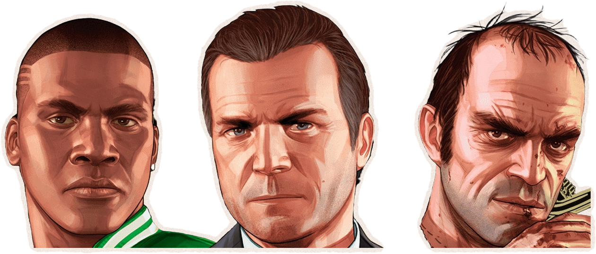

GTA V · 2013
Mezi GTA V a GTA VI jsme udělali
Kolik jich
stihneme
do GTA VII?
stihneme
do GTA VII?

GTA VI · 2026
Tipni si do komentářů.
VeganFest 2027 už je ohlášený – na ten nemusíš čekat 13 let.
VeganFest 2027 už je ohlášený – na ten nemusíš čekat 13 let.